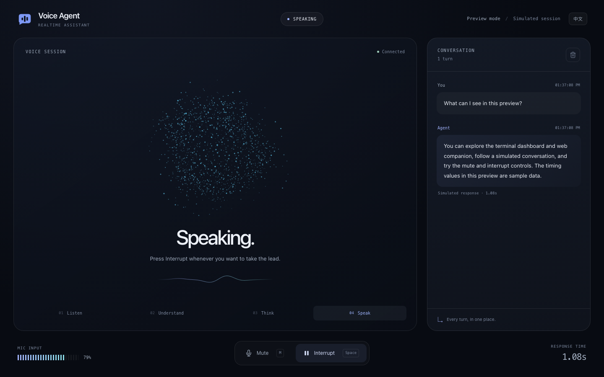

A conversation.
In your workspace.
A Python voice assistant with a live terminal dashboard and browser companion. Follow every turn from microphone input to spoken response.


Detect the turn.
Local VAD separates speech from background silence.
Stream the reply.
Turn response sentences into speech through the async pipeline.
Keep the conversation moving.
Stop playback from the terminal or browser.
Installation
Use Python 3.11+ and uv. Preview mode lets you inspect the interface without an API key or microphone.
git clone https://github.com/natelindev/voice-agent.git
cd voice-agent
uv sync --locked
uv run voice-agent --demo --webLive API mode
Install PortAudio for your operating system, allow microphone access to the launching terminal, and configure an OpenAI API key. On Ubuntu/Debian, install libportaudio2 with your package manager. On macOS, use the command below.
brew install portaudio
cp .env.example .env
# Edit .env and set OPENAI_API_KEY
uv run voice-agent --webKeep .env private. API mode sends utterance audio for transcription, text and conversation context for responses, and response text for synthesis. API usage is billed by the provider.
Choose a runtime mode
| Mode | Speech | Response generation |
|---|---|---|
| API | Local Silero VAD; Whisper API ASR; OpenAI PCM TTS | OpenAI streaming chat completions |
| Mac speech + Codex | Local whisper.cpp ASR; macOS say | Authenticated Codex CLI over the network |
| Preview | Simulated audio and turns | Fixed example conversation |
With OPENAI_API_KEY, API mode is selected by default. Without a key, the CLI defaults to the Mac speech backend unless --demo is supplied. --local explicitly selects Mac speech and takes precedence over --demo.
Mac speech prerequisites
This backend requires macOS, say, an authenticated codex executable, whisper.cpp’s whisper-server or whisper-cli, and the OpenSuperWhisper model at the path below. It is designed for Apple Silicon.
~/Library/Application Support/ru.starmel.OpenSuperWhisper/whisper-models/ggml-large-v3-turbo.binThe implementation first uses a whisper server at 127.0.0.1:8178, attempts to launch it when the model exists, and falls back to whisper-cli. The default macOS voice is Samantha.
uv run voice-agent --local --webTalk, listen, interrupt
The terminal dashboard appears when standard output is a TTY. The optional browser companion at http://127.0.0.1:8000 shows pipeline state, audio levels, transcripts, and turn metrics. Audio capture and playback happen in Python on the host, rather than in your browser.
| Control | Action |
|---|---|
| Space / Interrupt | Stop the assistant’s current response. |
| M / Mute | Toggle microphone capture state. |
| R / Clear | Reset conversation history. |
| Ctrl+C | Stop the process. |
Speakers or headphones
Speaker mode suppresses microphone input during assistant playback and a 500 ms echo-drain interval. Echo filtering rejects recognized speaker bleed. Use manual interruption while playing through speakers.
uv run voice-agent --web --headphonesHeadphone mode allows microphone-triggered interruption during playback. Use headphones to avoid the assistant hearing itself.
Reading latency
Per-turn metrics track transcription, response timing, first speech chunk, and total response timing. Real latency depends on hardware, network, speech length, and the chosen backend. Preview values are synthetic; this repository does not establish a guaranteed latency benchmark.
Pipeline & audio contracts
An asynchronous event hub connects capture, VAD, transcription, generation, playback, and both interfaces. Audio callbacks run in sounddevice’s thread context; pipeline work uses asyncio.
Microphone → Silero VAD → utterance PCM
→ ASR → user text → response sentences
→ speech synthesis → speaker playback
EventHub → terminal dashboard + WebSocket companion| Stage | Current API implementation |
|---|---|
| Capture / VAD | 16 kHz mono float32 input, 512-sample chunks; utterance int16 PCM. |
| Transcription | whisper-1 with utterance audio. |
| Generation | gpt-4o-mini, streaming chat and sentence splitting. |
| Synthesis | gpt-4o-mini-tts, coral voice, streamed PCM. |
| Interruption | Cancellation signaling plus playback stop; work is cooperatively canceled. |
Models, sample formats, local server URL, and Mac voice are currently defined in source; they are not environment configuration switches. The local Codex backend waits for command output before splitting the reply into sentences.
Command line
| Option | Behavior |
|---|---|
--web / -w | Start the local HTTP and WebSocket companion. |
--port / -p | Companion port; default 8000. |
--no-open | Start the companion without opening a browser. |
--headless / --no-tui | Disable terminal dashboard. |
--local / -l | Select Mac speech + Codex backend. |
--demo | Simulated preview; ignored when --local is set. |
--headphones | Allow voice interruption during assistant playback. |
--verbose / -v | Debug logging. |
--help | Display CLI help. |
uv run voice-agent --demo --web --no-open --port 8010
uv run voice-agent --web --headless
uv run voice-agent --helpThe companion binds to 127.0.0.1 and has no built-in authentication. It is intended for local use. Debug logs may include transcript text; redact it before sharing.
Troubleshooting
Preview works but live mode does not
Check PortAudio, microphone permissions, input/output devices, and the selected backend’s prerequisites. Preview intentionally bypasses microphone, ASR, and synthesis.
The app selects Mac mode unexpectedly
No API key selects the Mac backend by default. Set OPENAI_API_KEY in the environment or repository .env, or use --demo for a preview.
Local transcription is empty
Check the expected model path, the whisper.cpp executables, and whether port 8178 serves the compatible inference endpoint. Missing tools or model files prevent live local speech recognition.
The assistant hears itself
Use the default speaker mode and manual Interrupt control, or use headphones before enabling --headphones.
The browser shows disconnected
Keep the Python process running, check the configured port, and reload the companion. The browser depends on its WebSocket connection to the local backend.
No audio or model verification
Unit tests and preview checks do not replace a microphone-to-speaker test with actual services. Measure a real conversation on your target hardware before relying on latency or interruption behavior.
Development & contribution
Tests use mocked service boundaries and cover audio conversion, VAD, cancellation, local backends, events, dashboard, and WebSocket behavior.
uv sync --locked
uv run pytest tests/ -q
uv build
uv run voice-agent --demo --web --no-openSee contributor guidance. Preserve sample-rate contracts and cooperative cancellation when changing the pipeline.